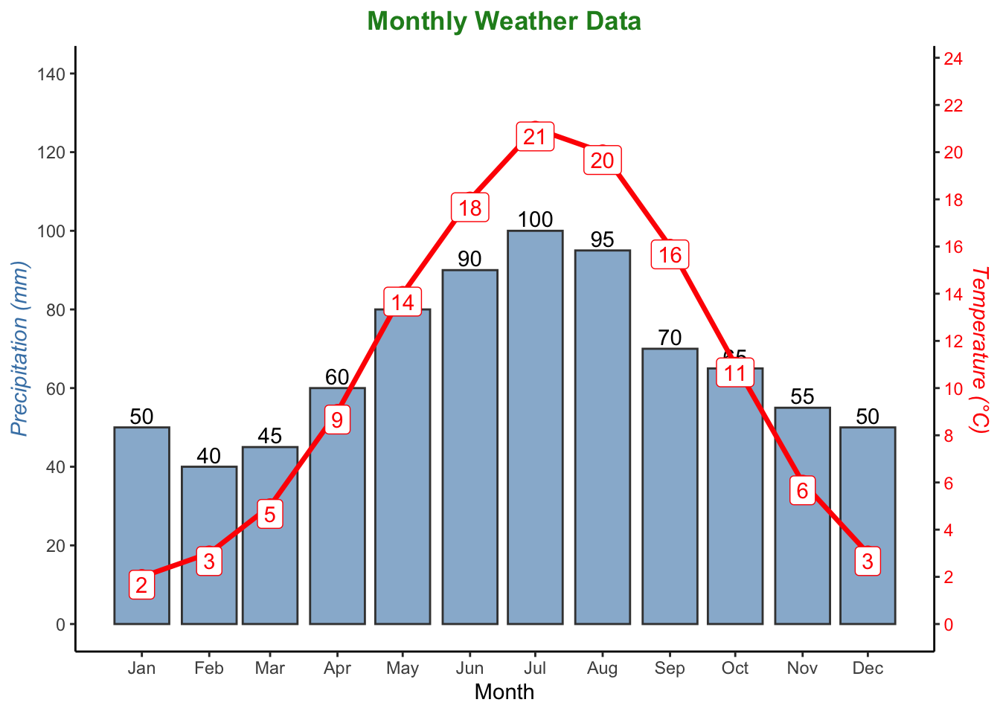
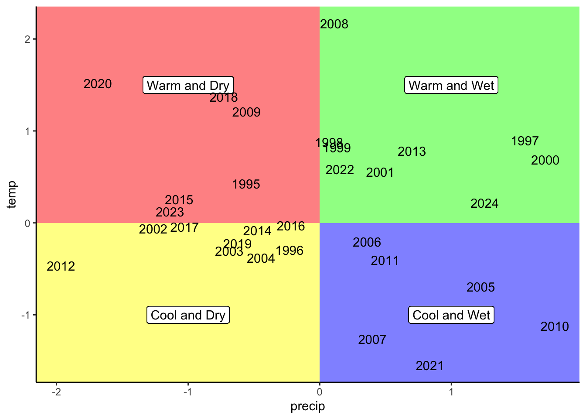
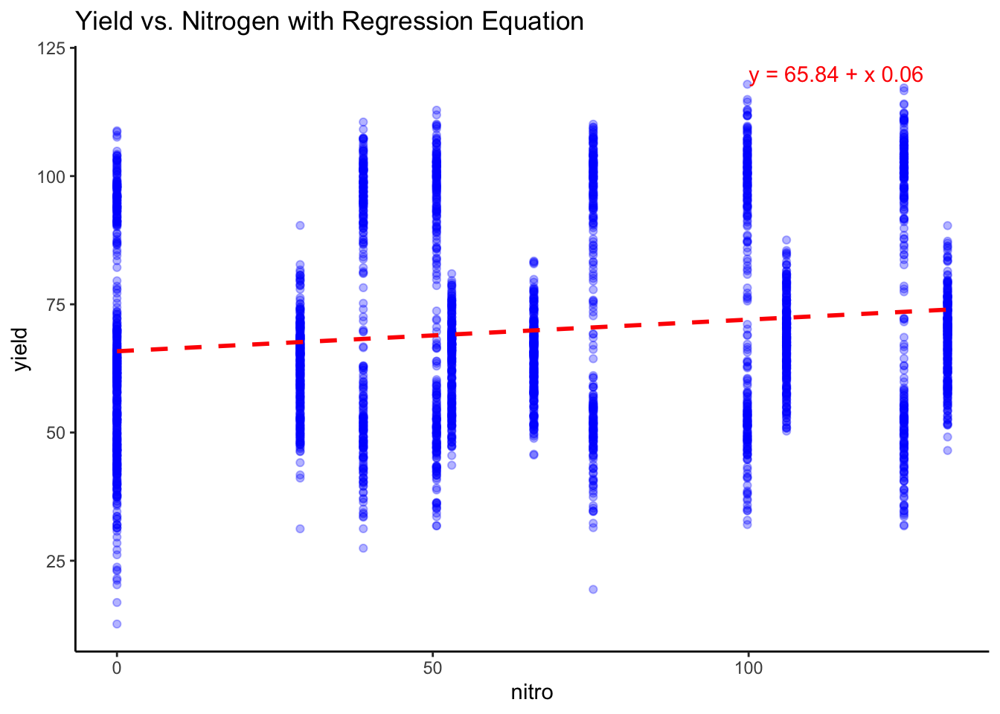

library(pacman)
p_load(agridat)
p_load(dplyr, tidyr)
p_load(ggplot2, patchwork, ggtext, ggrepel, ggthemes)
p_load(lubridate)Data Viz II
figures
graphics
plots
ggplot2
tidyverse
secondary-axis
annotations
Description
In this session, we’ll explore advanced visualization techniques using ggplot2, focusing on secondary axes, polygons for data segmentation, and mathematical annotations. These skills will help you create more dynamic and insightful visual representations.

1 Learning Objectives
By the end of this session, you will: 1. Implement secondary axes for multi-variable comparisons. 2. Use polygons to visually segment data regions. 3. Add mathematical annotations to highlight key relationships. 4. Refine plot aesthetics, including themes, legends, and custom annotations.
Required Packages
Ensure you have the following packages installed:
2 Visualizing Weather Data with Secondary Axes
In this section, we’ll visualize monthly temperature and precipitation data, using a secondary axis to compare the two variables.
# Create sample weather dataset
weather_data <- data.frame(
Month = as.integer(1:12),
Temperature = c(2, 3, 5, 9, 14, 18, 21, 20, 16, 11, 6, 3), # Monthly avg temp in °C
Precipitation = c(50, 40, 45, 60, 80, 90, 100, 95, 70, 65, 55, 50) # Monthly precip in mm
)
# Create month (as the month name) with "lubridate"
weather_data <- weather_data %>%
mutate(month = ymd(paste(2023, Month, "01", sep = "-")))
# Define conversion factor
conv_factor <- 6
# Base ggplot
weather_plot <-
# using numbers as months
#ggplot(data = weather_data, aes(x = Month)) +
# using months names
ggplot(data = weather_data, aes(x = month)) +
# Add geom_bar for Main Y-axis.
geom_bar(aes(y = Precipitation), stat = "identity", fill = "steelblue", color = "grey25", alpha = 0.6) +
geom_text(aes(label = Precipitation, y = Precipitation + 3)) +
# The geoms for the secondary axis are still displayed on the primay scale, so we need to adjust the scale of its units with the "conv_factor" we created above.
geom_line(aes(y = Temperature * conv_factor), color = "red", linewidth = 1.2) +
geom_point(aes(y = Temperature * conv_factor), color = "red", size = 3) +
geom_label(aes(label = Temperature, y = (Temperature * conv_factor) - 2), color = "red") +
# Adjust scale of Y-axis
scale_y_continuous(
# Main
limits = c(0, 140),
breaks = seq(0, 140, by = 20),
name = "Precipitation (mm)",
# Secondary
sec.axis = sec_axis(~ . / conv_factor, name = "Temperature (°C)", breaks = seq(0, 24, by = 2))
) +
# Adjust scales if numeric
#scale_x_continuous(limits = c(0.5, 12.5), breaks = seq(1, 12, by = 1)) +
# Adjust x scale if it's date format
scale_x_date(
date_labels = "%b", # Show abbreviated month names
date_breaks = "1 month", # Break at every month
) +
# Add labels
labs(title = "Monthly Weather Data", x = "Month", y = "Precipitation (mm)") +
# Adjust themes
theme_classic() +
theme(
plot.title = element_text(color = "forestgreen", face = "bold", hjust = 0.5),
axis.title.y.right = element_text(color = "red", face = "italic", size = rel(1)),
axis.text.y.right = element_text(color = "red"),
axis.title.y = element_text(color = "steelblue", face = "italic", size = rel(1))
)
weather_plot
2.1 Explanation:
- Primary Y-axis: Displays precipitation in mm.
- Secondary Y-axis: Converts temperature to °C using a conversion factor.
- Annotations: Temperature and precipitation values are labeled for clarity.
3 Using Polygons for Data Segmentation
Polygons help segment and highlight specific regions in a plot, enhancing interpretability. Let’s suppose we have standardized data for both temperature and precipitation for the same location over a series of 30 years for a give location.
# Set seed for reproducibility
set.seed(123)
# Create the dataframe
df <- data.frame(precip = rnorm(30), temp = rnorm(30),
year = seq(1995, 2024, by = 1))
polygon_plot <- ggplot(df) +
# Add annotation
annotate("rect", xmin = -Inf, xmax = 0, ymin = -Inf, ymax = 0, fill = "yellow", alpha = 0.5) +
# Add label
geom_label(x = -1, y = -1, label = "Cool and Dry") +
# Repeat for the rest of the polygons
# Annotation
annotate("rect", xmin = 0, xmax = Inf, ymin = -Inf, ymax = 0, fill = "blue", alpha = 0.5) +
geom_label(x = 1, y = -1, label = "Cool and Wet") +
# Annotation
annotate("rect", xmin = 0, xmax = Inf, ymin = 0, ymax = Inf, fill = "green", alpha = 0.5) +
geom_label(x = 1, y = 1.5, label = "Warm and Wet") +
# Annotation
annotate("rect", xmin = -Inf, xmax = 0, ymin = 0, ymax = Inf, fill = "red", alpha = 0.5) +
geom_label(x = -1, y = 1.5, label = "Warm and Dry") +
# Add data points with year values instead of symbols (geom_text vs. geom_point)
geom_text(aes(label = year, y = temp, x = precip)) +
theme_classic()
polygon_plot
3.1 Explanation:
annotate("rect"): Creates colored polygons for each quadrant.- Labels: Descriptive labels are added to clarify each region.
4 Adding Mathematical Annotations
Adding mathematical annotations can clarify relationships in your data.
# Load corn dataset
corn_data <- agridat::lasrosas.corn
# Fit linear model
lm_fit <- lm(yield ~ nitro, data = corn_data)
# Extract regression equation
lm_eq <- paste0("y = ", round(coef(lm_fit)["(Intercept)"], 2), " + x ", round(coef(lm_fit)["nitro"], 2))
# Plot with annotation
scatter_with_equation <- corn_data %>%
ggplot(aes(x = nitro, y = yield)) +
geom_point(color = "blue", alpha = 0.3) +
geom_smooth(method = "lm", se = FALSE, color = "red", linetype = "dashed") +
annotate("text", x = 100, y = 120, label = lm_eq, hjust = 0, color = "red") +
labs(title = "Yield vs. Nitrogen with Regression Equation") +
theme_classic()
scatter_with_equation`geom_smooth()` using formula = 'y ~ x'
4.1 Explanation:
lm()fits a linear model to the data.annotate()displays the regression equation on the plot.
5 Conclusion
In this tutorial, you’ve learned how to: - Use secondary axes to visualize multiple variables. - Segment data regions with polygons for enhanced interpretability. - Add mathematical annotations to highlight key relationships.
These advanced visualization techniques will elevate your data reports and improve analytical clarity. 🚀
Next class, we will cover how to plot geographical maps with ggplot2!
6 Additional resources
Remember to explore additional resources for more learning:
- ggplot2 Documentation – The official documentation for ggplot2 with comprehensive guides and examples.
- R Graphics Cookbook – A collection of practical recipes for creating a wide variety of graphics with ggplot2.
- The Grammar of Graphics by Leland Wilkinson – The foundational theory behind ggplot2.
- Data Visualization: A Practical Introduction by Kieran Healy – An excellent resource for both beginners and advanced users.
- Tidyverse Tutorials – Tutorials on ggplot2 and related packages in the Tidyverse ecosystem.
- R Graph Gallery – A rich gallery of ggplot2 visualizations for inspiration and code snippets.